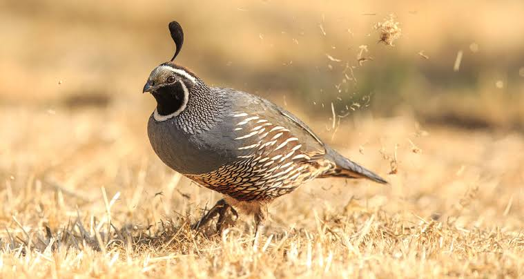

Quail
Birds
Quail is a collective name for several genera of mid-sized birds generally placed in the order Galliformes.
Old World quail are placed in the family Phasianidae, and New World quail are placed in the family Odontophoridae. The species of buttonquail are named for their superficial resemblance to quail, and form the family Turnicidae in the order Charadriiformes.
The king quail, an Old World quail, often is sold in the pet trade, and within this trade is commonly, though mistakenly, referred to as a "button quail". Many of the common larger species are farm-raised for table food or egg consumption, and are
hunted on game farms or in the wild, where they may be released to supplement the wild population, or extend into areas outside their natural range. In 2007, 40 million quail were produced in the U.S.
Clutch size: Mountain quail: 9 – 10
Wingspan: Mountain quail: 35 – 40 cm
Mass: Common quail: 96 g, Japanese quail: 90 g,
Length: Common quail: 18 cm, Northern bobwhite: 20 – 25 cm,
Quail, any of roughly 130 species of small short-tailed game birds classified in the families Phasianidae and Odontophoridae (order Galliformes), resembling partridges but generally smaller and less robust.
The 95 species of Old World quail are classified in Phasianidae in either of two subfamilies, Phasianinae or Perdicinae. New World quail—at least 32 species whose members more nearly resemble Old World partridges—constitute the family Odontophoridae.
Quail prefer open country and brushy borders. In spring the hen lays about 12 roundish eggs, which the male may help incubate. The young remain with their parents the first summer.
Quail eat mainly seeds and berries but also take leaves, roots, and some insects. Their flesh is considered a delicacy, as are their eggs.
New World quail have stronger bills than do the Old World forms, and none has leg spurs. The bobwhite (Colinus virginianus) of North America exists in about 20 races from southern Canada to Guatemala. Its name is suggestive of its call.
Other than the bobwhite, North American quail include two important game birds introduced widely elsewhere: the California, or valley, quail (Callipepla californica) and Gambel’s, or desert, quail (Lophortyx gambelii). Both species have a head plume (larger in males) curling forward.
Ranging farther east in North America is the scaled, or blue, quail (Callipepla squamata). Grayish, with scaly markings and a white-tipped crest, it is the fastest quail afoot, with running speeds measured at 24 km (15 miles) per hour.
The mountain, or plumed, quail (Oreortyx pictus), gray and reddish with a long straight plume, is perhaps the largest New World quail, weighing as much as 0.5 kg (about 1 pound). The singing, or long-clawed, quail (Dactylortyx thoracicus), of Central America, has a musical call.
The tree quail, or long-tailed partridge (Dendrortyx macroura), of Mexico, is a 33-cm (13-inch) bird of almost grouselike proportions. Wood quail—large birds of the genus Odontophorus—are the only phasianids widely distributed in South America; they are forest dwellers.